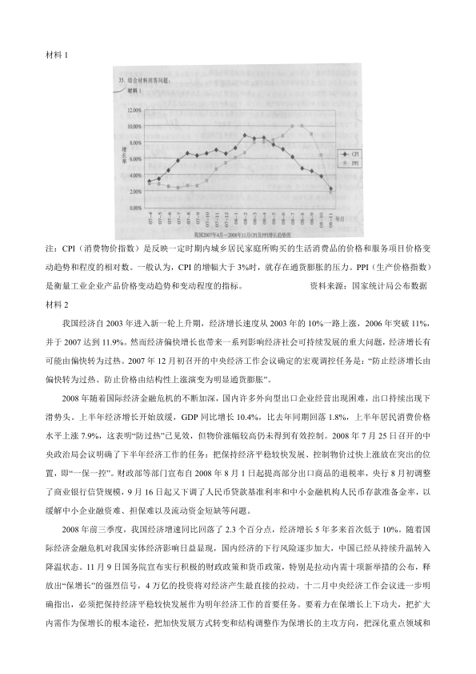

第 1 / 10 页

2009 年全国硕士研究生统一入学考试
思想政治理论试题
一、单项选择题：1～16 小题，每小题1 分，共16 分。下列每题给出的四个选项中，只有一个选项是符
合题目要求的。请在答题卡上将所选项的字母涂黑。
1. 物质和意识的对立只有在非常有限的范围内才有绝对的意义，超过这个范围便是相对的了。这个范围是
指：
A．物质和意识何者为第一性
B．物质和意识是否具有同一性
C．物质和意识何者更重要
D．物质和意识何者与社会生活的关系更密切
2. 1978 年关于真理标准大讨论是一场新的思想解放运动。实践之所以成为检验真理的唯一标准，是由：
A．真理的主观性和实践的客观性所要求的
B．真理的相对性和实践的绝对性所预设的
C．真理的属性和实践的功能所规定的
D．真理的本性和实践的特点所决定的
3. 近来马克思的《资本论》在西方一些国家销量大增。列宁曾说，马克思的《资本论》的成就之所以如此
之大，是由于这本书使读者看到整个资本主义社会形态是个活生生的形态，既有“骨骼”，又有“血肉”。人
类社会作为一种活的有机体，其“骨骼”系统是指：
A．地理环境、人口因素和生产方式等社会物质生活条件
B．与一定的生产力相适应的生产关系
C．建立在一定经济基础之上的政治法律制度及设施
D．由政治法律思想、道德、宗教、哲学等构成的社会意识形态
4. 卢梭在《论人类不平等的起源和基础》中说道：“我认为，在人类的一切知识中，最有用但也最不完善
的知识就是关于人的知识。”马克思的唯物史观破解了人是什么这一“司芬克斯之谜”。马克思在《关于费尔
巴哈的提纲》中指出，人的本质在其现实性上是：
A．自然属性和社会属性的内在统一
B．所有人共同属性的概括
C．一切社会关系的总和
D．自由理性的外化
5. 流通中的货币需要量是考查经济生活运行的重要指标，假设某国去年的商品价格总额为24 万亿元，流
通需要量为3 万亿元。若今年该国商品价格总额增长10%，其他条件不变，今年流通中需要的货币量为：
A．4.2 万亿元
B．3.5 万亿元
C．3.3 万亿元
D．2.4 万亿元
6. 国家垄断资本主义条件下，政府对经济生活进行干预和调节的实质是：
A．维护垄断资产阶级的整体利益和长远利益
B．维持资本主义经济稳定增长
C．消除或防止经济危机的爆发
D．提高资本主义社会的整体福利水平
7. 某钢铁厂因铁矿石价格上涨，增加了该厂的预付资本数量，这使得该厂的资本构成发生了变化，所变化
查看 / 复制本页文字
2009 年全国硕士研究生统一入学考试 思想政治理论试题 一、单项选择题：1～16 小题，每小题1 分，共16 分。下列每题给出的四个选项中，只有一个选项是符 合题目要求的。请在答题卡上将所选项的字母涂黑。 1. 物质和意识的对立只有在非常有限的范围内才有绝对的意义，超过这个范围便是相对的了。这个范围是 指： A．物质和意识何者为第一性 B．物质和意识是否具有同一性 C．物质和意识何者更重要 D．物质和意识何者与社会生活的关系更密切 2. 1978 年关于真理标准大讨论是一场新的思想解放运动。实践之所以成为检验真理的唯一标准，是由： A．真理的主观性和实践的客观性所要求的 B．真理的相对性和实践的绝对性所预设的 C．真理的属性和实践的功能所规定的 D．真理的本性和实践的特点所决定的 3. 近来马克思的《资本论》在西方一些国家销量大增。列宁曾说，马克思的《资本论》的成就之所以如此 之大，是由于这本书使读者看到整个资本主义社会形态是个活生生的形态，既有“骨骼”，又有“血肉”。人 类社会作为一种活的有机体，其“骨骼”系统是指： A．地理环境、人口因素和生产方式等社会物质生活条件 B．与一定的生产力相适应的生产关系 C．建立在一定经济基础之上的政治法律制度及设施 D．由政治法律思想、道德、宗教、哲学等构成的社会意识形态 4. 卢梭在《论人类不平等的起源和基础》中说道：“我认为，在人类的一切知识中，最有用但也最不完善 的知识就是关于人的知识。”马克思的唯物史观破解了人是什么这一“司芬克斯之谜”。马克思在《关于费尔 巴哈的提纲》中指出，人的本质在其现实性上是： A．自然属性和社会属性的内在统一 B．所有人共同属性的概括 C．一切社会关系的总和 D．自由理性的外化 5. 流通中的货币需要量是考查经济生活运行的重要指标，假设某国去年的商品价格总额为24 万亿元，流 通需要量为3 万亿元。若今年该国商品价格总额增长10%，其他条件不变，今年流通中需要的货币量为： A．4.2 万亿元 B．3.5 万亿元 C．3.3 万亿元 D．2.4 万亿元 6. 国家垄断资本主义条件下，政府对经济生活进行干预和调节的实质是： A．维护垄断资产阶级的整体利益和长远利益 B．维持资本主义经济稳定增长 C．消除或防止经济危机的爆发 D．提高资本主义社会的整体福利水平 7. 某钢铁厂因铁矿石价格上涨，增加了该厂的预付资本数量，这使得该厂的资本构成发生了变化，所变化
第 2 / 10 页
的资本构成是：
A．资本技术构成
B．资本价值构成
C．资本物质构成
D．资本有机构成
8. 1925 年毛泽东在《中国社会各阶级的分析》中指出，中国过去一切革命斗争成效甚少的基本原因就是：
A．没有找到革命的新道路
B．没有扩大民主主义的宣传
C．没有到群众中做实际的调查
D．没有团结真正的朋友以攻击真正的敌人
9. 延安时期，毛泽东写下了著名的《实践论》、《矛盾论》，主要是为了克服党内严重的：
A．经验主义
B．冒险主义
C．机会主义
D．教条主义
10. 中共七届二中全会后，党制定和实行新民主主义经济建设的方针政策是：
A．既反保守又反冒进，在综合平衡中稳步前进
B．公私兼顾、劳资两利、城乡互助、内外交流
C．调整、巩固、充实、提高
D．实现速度、结构、效益、质量的统一
11. 科学发展观的根本方法是：
A．把发展作为第一要义
B．以人为本
C．统筹兼顾
D．全面协调可持续
12. 社会主义新农村建设的中心环节是：
A．生产发展
B．生活宽裕
C．乡风文明
D．管理民主
13. 马克思主义中国化理论成果的精髓是：
A．理论联系实际
B．解放思想
C．实事求是
D．与时俱进
14. 2008 年5 月28 日，中共中央总书记胡锦涛和中国国民党主席吴伯雄在北京人民大会堂举行了两党在新
形势下的首次会谈。此次会谈：
A. 就促进两岸关系改善和发展达成了广泛共识
B. 开启了国共两党对话先声
C. 发布了“两岸和平发展共同愿景”
D. 签署了《海峡两岸包机会谈纪要》
15. 2008 年9 月25 日，我国“神州七号”航天飞船成功飞入太空，首次实现了：
A. 载人飞行
B. 绕月探测
C. 天地对话
D. 出舱活动
16. 在2008 年4 月中旬举行的尼泊尔制宪会议选举上，一举成为第一大党的是：
A. 尼泊尔共产党（联合马列）
B. 尼泊尔共产党（毛主义）
C. 尼泊尔大会党
D. 尼泊尔民族民主党
二、多项选择题：17～33 题，每小题2 分，共34 分。下列每题给出的四个选项中，至少有两个选项是符
合题目要求的。请在答题卡上将所选项的字母涂黑。多选或少选均不得分。
17. 近一年多来由美国次贷危机引发的金融危机迅速在全球蔓延。在危机面前，人们应该积极主动应对，
化“危”为“机”。下列名言中符合意识能动性原理的有：
查看 / 复制本页文字
的资本构成是： A．资本技术构成 B．资本价值构成 C．资本物质构成 D．资本有机构成 8. 1925 年毛泽东在《中国社会各阶级的分析》中指出，中国过去一切革命斗争成效甚少的基本原因就是： A．没有找到革命的新道路 B．没有扩大民主主义的宣传 C．没有到群众中做实际的调查 D．没有团结真正的朋友以攻击真正的敌人 9. 延安时期，毛泽东写下了著名的《实践论》、《矛盾论》，主要是为了克服党内严重的： A．经验主义 B．冒险主义 C．机会主义 D．教条主义 10. 中共七届二中全会后，党制定和实行新民主主义经济建设的方针政策是： A．既反保守又反冒进，在综合平衡中稳步前进 B．公私兼顾、劳资两利、城乡互助、内外交流 C．调整、巩固、充实、提高 D．实现速度、结构、效益、质量的统一 11. 科学发展观的根本方法是： A．把发展作为第一要义 B．以人为本 C．统筹兼顾 D．全面协调可持续 12. 社会主义新农村建设的中心环节是： A．生产发展 B．生活宽裕 C．乡风文明 D．管理民主 13. 马克思主义中国化理论成果的精髓是： A．理论联系实际 B．解放思想 C．实事求是 D．与时俱进 14. 2008 年5 月28 日，中共中央总书记胡锦涛和中国国民党主席吴伯雄在北京人民大会堂举行了两党在新 形势下的首次会谈。此次会谈： A. 就促进两岸关系改善和发展达成了广泛共识 B. 开启了国共两党对话先声 C. 发布了“两岸和平发展共同愿景” D. 签署了《海峡两岸包机会谈纪要》 15. 2008 年9 月25 日，我国“神州七号”航天飞船成功飞入太空，首次实现了： A. 载人飞行 B. 绕月探测 C. 天地对话 D. 出舱活动 16. 在2008 年4 月中旬举行的尼泊尔制宪会议选举上，一举成为第一大党的是： A. 尼泊尔共产党（联合马列） B. 尼泊尔共产党（毛主义） C. 尼泊尔大会党 D. 尼泊尔民族民主党 二、多项选择题：17～33 题，每小题2 分，共34 分。下列每题给出的四个选项中，至少有两个选项是符 合题目要求的。请在答题卡上将所选项的字母涂黑。多选或少选均不得分。 17. 近一年多来由美国次贷危机引发的金融危机迅速在全球蔓延。在危机面前，人们应该积极主动应对， 化“危”为“机”。下列名言中符合意识能动性原理的有：
第 3 / 10 页
A．信心比黄金更重要
B．我们唯一恐惧的就是恐惧本身
C．问题与解决问题的方法是同时产生的
D．事不避难，知难不难
18. 邓小平说：“农村搞家庭联产承包，这个发明权是农民的。农村改革中的好多东西都是基层创造出来的，
我们把它拿来加工提高作为全国的指导。”这对我们实现思想理论创新具有普遍指导意义，它要求我们：
A．要以解放思想为先导
B．打破一切理论的约束
C．关注生活实践的需要
D．尊重人民群众的诉求
19．“随着新生产力的获得……人们也就会改变自己的一切社会关系。手推磨产生的是封建主义的社会，
蒸汽磨产生的是工业资本家的社会。”这段话表明科学技术是：
A．历史上起推动作用的革命力量
B．历史变革中的唯一决定性力量
C．推动生产方式变革的重要力量
D．一切社会变革中的自主性力量
20. 华罗庚生前曾说：“我们最好把自己的生命看作是前人生命的延续，是现在人类共同的生命的一部分，
同时也是后人生命的开端。如此延续下去，科学就会一天比一天更灿烂，社会就会一天比一天更美好。”
这段话对我们如何实现人的个人价值的教益是：
A．个人价值的实现与社会价值的实现是统一的
B．个人价值的实现是一个历史过程
C．个人价值的实现是社会价值实现的归宿
D．个人价值的实现和个人生命的长短相一致
21．“信用制度加速了生产力的物质上的发展和世界市场的形成；使这二者作为新生产形式的物质基础发
展到一定的高度，是资本主义生产方式的历史使命。同时，信用加速了这种矛盾的暴力的爆发，即危机，
因而加强了旧生产方式的解体的各种因素。”马克思的这一论述表明，资本主义信用制度：
A．已成为资本主义经济危机爆发的深层原因
B．促进了建立社会主义生产方式的物质基础的形成
C．加速了资本主义生产方式内部矛盾发展和解体要素的形成
D．既推动商品经济的发展，又加深了商品经济运行中的矛盾
22. 劳动力是任何社会生产的基本要素，在特定的社会发展阶段和特定的历史条件下，劳动力作为一种特
殊商品，其价值的构成包括：
A．维持劳动者自身生存所必需的生活资料的价值
B．劳动者在必要劳动时间内创造的价值
C．劳动者繁育后代所必需的生活资料的价值
D．培养和训练劳动者所需要的费用
23. 党的十七届三中全会通过的《中共中央关于推进农村改革发展若干重大问题的决定》指出：“建立健全
土地承包经营权流转市场，按照依法自愿有偿原则，允许农民以转包、出租、互换、转让、股份合作等形
式流转土地承包经营权，发展多种形式的适度规模经营。”上述决定有利于：
查看 / 复制本页文字
A．信心比黄金更重要 B．我们唯一恐惧的就是恐惧本身 C．问题与解决问题的方法是同时产生的 D．事不避难，知难不难 18. 邓小平说：“农村搞家庭联产承包，这个发明权是农民的。农村改革中的好多东西都是基层创造出来的， 我们把它拿来加工提高作为全国的指导。”这对我们实现思想理论创新具有普遍指导意义，它要求我们： A．要以解放思想为先导 B．打破一切理论的约束 C．关注生活实践的需要 D．尊重人民群众的诉求 19．“随着新生产力的获得……人们也就会改变自己的一切社会关系。手推磨产生的是封建主义的社会， 蒸汽磨产生的是工业资本家的社会。”这段话表明科学技术是： A．历史上起推动作用的革命力量 B．历史变革中的唯一决定性力量 C．推动生产方式变革的重要力量 D．一切社会变革中的自主性力量 20. 华罗庚生前曾说：“我们最好把自己的生命看作是前人生命的延续，是现在人类共同的生命的一部分， 同时也是后人生命的开端。如此延续下去，科学就会一天比一天更灿烂，社会就会一天比一天更美好。” 这段话对我们如何实现人的个人价值的教益是： A．个人价值的实现与社会价值的实现是统一的 B．个人价值的实现是一个历史过程 C．个人价值的实现是社会价值实现的归宿 D．个人价值的实现和个人生命的长短相一致 21．“信用制度加速了生产力的物质上的发展和世界市场的形成；使这二者作为新生产形式的物质基础发 展到一定的高度，是资本主义生产方式的历史使命。同时，信用加速了这种矛盾的暴力的爆发，即危机， 因而加强了旧生产方式的解体的各种因素。”马克思的这一论述表明，资本主义信用制度： A．已成为资本主义经济危机爆发的深层原因 B．促进了建立社会主义生产方式的物质基础的形成 C．加速了资本主义生产方式内部矛盾发展和解体要素的形成 D．既推动商品经济的发展，又加深了商品经济运行中的矛盾 22. 劳动力是任何社会生产的基本要素，在特定的社会发展阶段和特定的历史条件下，劳动力作为一种特 殊商品，其价值的构成包括： A．维持劳动者自身生存所必需的生活资料的价值 B．劳动者在必要劳动时间内创造的价值 C．劳动者繁育后代所必需的生活资料的价值 D．培养和训练劳动者所需要的费用 23. 党的十七届三中全会通过的《中共中央关于推进农村改革发展若干重大问题的决定》指出：“建立健全 土地承包经营权流转市场，按照依法自愿有偿原则，允许农民以转包、出租、互换、转让、股份合作等形 式流转土地承包经营权，发展多种形式的适度规模经营。”上述决定有利于：
第 4 / 10 页
A．调整农村土地所有制结构
B．完善土地承包经营权权能
C．进一步完善生产要素市场
D．促进土地资源的优化配置
24. 合理的收入分配制度是社会公平的重要体现。在构建社会主义和谐社会过程中，初次分配和再分配都
要处理好效率和公平的关系，再分配更加注重公平，逐步提高居民收入在国民收入分配中的比重，提高劳
动报酬在初次分配中的比重。这表明处理效率与公平的关系，就要：
A．把效率和公平相互之间的矛盾协调统一起来
B．充分发挥市场机制对收入分配的调节作用
C．改革现有的收入分配制度，规范收入分配秩序
D．合理调整国民收入分配格局，加大收入分配调节力度
25. 1921 年中国共产党的成立，是中国革命历史上划时代的里程碑，中国革命的面目焕然一新，从此中国
革命有了：
A．正确的革命道路
B．科学的指导思想
C．坚强的领导力量
D．崭新的奋斗目标
26. 新民主主义的文化，是民族的科学的大众的文化。其中“民族的”是指：
A．反对外来的资本主义文化
B．反对帝国主义压迫，主张中华民族的尊严和独立
C．在形式和内容上有中国作风和中国气派
D．为全民族90%以上的工农大众服务
27. 在民主革命和社会主义革命的关系问题上，中国共产党内曾经出现过不同的观点和主张，其中错误的
有：
A.“毕其功于一役”
B.“二次革命论”
C.“无间断”革命
D．中国革命分“两步走”
28. 20 世纪50 年代中期，社会主义改造基本完成，标志着：
A．社会主义制度在我国已经确立
B．我国进入了社会主义初级阶段
C．我国步入了社会主义改革时期
D．我国完成了从新民主主义向社会主义的过渡
29. 我们所要建设的社会主义和谐社会，应该是民主法治、公平正义、诚信友爱、充满活力、安定有序、
人与自然和谐相处的社会。其中“诚信友爱”的内涵包括：
A．全社会管理完善、秩序良好
B．全社会互帮互助、诚实守信
C．全体人民生活富裕、安居乐业
D．全体人民平等友爱、融洽相处
30. 基层群众自治制度是我国政治制度体系中的重要组成部分，其主要内容有：
A．农村村民委员会
B．城市居民委员会
查看 / 复制本页文字
A．调整农村土地所有制结构 B．完善土地承包经营权权能 C．进一步完善生产要素市场 D．促进土地资源的优化配置 24. 合理的收入分配制度是社会公平的重要体现。在构建社会主义和谐社会过程中，初次分配和再分配都 要处理好效率和公平的关系，再分配更加注重公平，逐步提高居民收入在国民收入分配中的比重，提高劳 动报酬在初次分配中的比重。这表明处理效率与公平的关系，就要： A．把效率和公平相互之间的矛盾协调统一起来 B．充分发挥市场机制对收入分配的调节作用 C．改革现有的收入分配制度，规范收入分配秩序 D．合理调整国民收入分配格局，加大收入分配调节力度 25. 1921 年中国共产党的成立，是中国革命历史上划时代的里程碑，中国革命的面目焕然一新，从此中国 革命有了： A．正确的革命道路 B．科学的指导思想 C．坚强的领导力量 D．崭新的奋斗目标 26. 新民主主义的文化，是民族的科学的大众的文化。其中“民族的”是指： A．反对外来的资本主义文化 B．反对帝国主义压迫，主张中华民族的尊严和独立 C．在形式和内容上有中国作风和中国气派 D．为全民族90%以上的工农大众服务 27. 在民主革命和社会主义革命的关系问题上，中国共产党内曾经出现过不同的观点和主张，其中错误的 有： A.“毕其功于一役” B.“二次革命论” C.“无间断”革命 D．中国革命分“两步走” 28. 20 世纪50 年代中期，社会主义改造基本完成，标志着： A．社会主义制度在我国已经确立 B．我国进入了社会主义初级阶段 C．我国步入了社会主义改革时期 D．我国完成了从新民主主义向社会主义的过渡 29. 我们所要建设的社会主义和谐社会，应该是民主法治、公平正义、诚信友爱、充满活力、安定有序、 人与自然和谐相处的社会。其中“诚信友爱”的内涵包括： A．全社会管理完善、秩序良好 B．全社会互帮互助、诚实守信 C．全体人民生活富裕、安居乐业 D．全体人民平等友爱、融洽相处 30. 基层群众自治制度是我国政治制度体系中的重要组成部分，其主要内容有： A．农村村民委员会 B．城市居民委员会
第 5 / 10 页
C．企业职工代表大会
D．妇女联合会
31. 2008 年5 月12 日，我国发生了震惊世界的四川汶川大地震。在这次抗震救灾中，全党全军全国人民在
党中央国务院领导下众志成城，坚持把抢救人的生命放在第一位，只要有一线希望就尽百倍努力，84017
名群众被从废墟中抢救出来，140 万名被困群众得到解救，430 多万名伤病员得到及时救治，其中1 万多
名重伤员被快速转送到全国20 个省区市375 家医院。这些事实生动地体现了：
A．我国社会主义制度珍爱生命、保护人民的性质
B．中华民族关爱生命、崇尚理性的民族品格
C．党和政府全心全意为人民服务的根本宗旨
D．社会主义核心价值体系建设的重大成效
32. 2008 年6 月20 日，胡锦涛同志到人民日报社视察工作，并在线与网民进行了交流，表达了党和政府对
网络民意的高度重视。近年来，越来越多的政府官员上网收集民意。这意味着网络表达已成为：
A．公民政治参与的新途径
B．反腐倡廉的新通道
C．民主政治体制的新形式
D．密切干群关系的新方式
33. 2008 年8 月8 日至24 日，第29 届奥林匹克运动会在北京成功举行。中国政府和人民认真履行了对国
际社会的郑重承诺。中国提出的奥运理念丰富了奥林匹克精神，彰显了中国和世界在追求人类共同进步中
坚守的共同梦想。中国提出的本届奥运会理念是：
A.“平安奥运”
B.“绿色奥运”
C.“科技奥运”
D.“人文奥运”
三、分析题：34～38 小题，每小题10 分，共50 分。要求结合所学知识分析材料并回答问题。将答案写
在答题纸指定位置上。
34. 结合材料回答问题：
华佗是我国东汉名医。一次，府吏倪寻和李延俩人均头痛发热，一同去请华佗诊治。华佗经过仔细地
望色、诊脉，开出两付不同的处方，给倪寻开的是泻药，而给李延开的是解表发散药。二人不解：我俩患
的是同一症状，为何开的药方却不同呢？是不是华佗弄错了？于是，他们向华佗请教。华佗解释道：倪寻
的病是由于饮食过多引起的，病在内，应当服泻药，将积滞泻去，病就好了。李延的病是受凉感冒引起的，
病在外，应当吃解表药，风寒之邪随汗而去，头痛也就好了。你们病症相似，但病因相异，所以治之宜殊。
二人拜服，回家后各自将药熬好服下，很快都痊愈了。
中医是我国宝贵的医学遗产，强调辩证施治。华佗对症下药治头痛发热的故事蕴含着丰富的辩证法思
想。
（1）指出其中所涉及的唯物辩证法基本范畴并分析其内涵。
（2）这个故事对我们理解“具体问题具体分析”有何启示？
35. 结合材料回答问题:
查看 / 复制本页文字
C．企业职工代表大会 D．妇女联合会 31. 2008 年5 月12 日，我国发生了震惊世界的四川汶川大地震。在这次抗震救灾中，全党全军全国人民在 党中央国务院领导下众志成城，坚持把抢救人的生命放在第一位，只要有一线希望就尽百倍努力，84017 名群众被从废墟中抢救出来，140 万名被困群众得到解救，430 多万名伤病员得到及时救治，其中1 万多 名重伤员被快速转送到全国20 个省区市375 家医院。这些事实生动地体现了： A．我国社会主义制度珍爱生命、保护人民的性质 B．中华民族关爱生命、崇尚理性的民族品格 C．党和政府全心全意为人民服务的根本宗旨 D．社会主义核心价值体系建设的重大成效 32. 2008 年6 月20 日，胡锦涛同志到人民日报社视察工作，并在线与网民进行了交流，表达了党和政府对 网络民意的高度重视。近年来，越来越多的政府官员上网收集民意。这意味着网络表达已成为： A．公民政治参与的新途径 B．反腐倡廉的新通道 C．民主政治体制的新形式 D．密切干群关系的新方式 33. 2008 年8 月8 日至24 日，第29 届奥林匹克运动会在北京成功举行。中国政府和人民认真履行了对国 际社会的郑重承诺。中国提出的奥运理念丰富了奥林匹克精神，彰显了中国和世界在追求人类共同进步中 坚守的共同梦想。中国提出的本届奥运会理念是： A.“平安奥运” B.“绿色奥运” C.“科技奥运” D.“人文奥运” 三、分析题：34～38 小题，每小题10 分，共50 分。要求结合所学知识分析材料并回答问题。将答案写 在答题纸指定位置上。 34. 结合材料回答问题： 华佗是我国东汉名医。一次，府吏倪寻和李延俩人均头痛发热，一同去请华佗诊治。华佗经过仔细地 望色、诊脉，开出两付不同的处方，给倪寻开的是泻药，而给李延开的是解表发散药。二人不解：我俩患 的是同一症状，为何开的药方却不同呢？是不是华佗弄错了？于是，他们向华佗请教。华佗解释道：倪寻 的病是由于饮食过多引起的，病在内，应当服泻药，将积滞泻去，病就好了。李延的病是受凉感冒引起的， 病在外，应当吃解表药，风寒之邪随汗而去，头痛也就好了。你们病症相似，但病因相异，所以治之宜殊。 二人拜服，回家后各自将药熬好服下，很快都痊愈了。 中医是我国宝贵的医学遗产，强调辩证施治。华佗对症下药治头痛发热的故事蕴含着丰富的辩证法思 想。 （1）指出其中所涉及的唯物辩证法基本范畴并分析其内涵。 （2）这个故事对我们理解“具体问题具体分析”有何启示？ 35. 结合材料回答问题:
第 6 / 10 页

材料1
注：CPI（消费物价指数）是反映一定时期内城乡居民家庭所购买的生活消费品的价格和服务项目价格变
动趋势和程度的相对数。一般认为，CPI 的增幅大于3%时，就存在通货膨胀的压力。PPI（生产价格指数）
是衡量工业企业产品价格变动趋势和变动程度的指标。
资料来源：国家统计局公布数据
材料2
我国经济自2003 年进入新一轮上升期，经济增长速度从2003 年的10%一路上涨，2006 年突破11%，
并于2007 达到11.9%。然而经济偏快增长也带来一系列影响经济社会可持续发展的重大问题，经济增长有
可能由偏快转为过热。2007 年12 月初召开的中央经济工作会议确定的宏观调控任务是：“防止经济增长由
偏快转为过热、防止价格由结构性上涨演变为明显通货膨胀”。
2008 年随着国际经济金融危机的不断加深，国内许多外向型出口企业经营出现困难，出口持续出现下
滑势头。上半年经济增长开始放缓，GDP 同比增长10.4%，比去年同期回落1.8%，上半年居民消费价格
水平上涨7.9%，这表明“防过热”已见效，但物价涨幅较高仍未得到有效控制。2008 年7 月25 日召开的中
央政治局会议明确了下半年经济工作的任务：把保持经济平稳较快发展、控制物价过快上涨放在突出的位
置，即“一保一控”。财政部等部门宣布自2008 年8 月1 日起提高部分出口商品的退税率，央行8 月初调整
了商业银行信贷规模，9 月16 日起又下调了人民币贷款基准利率和中小金融机构人民币存款准备金率，以
缓解中小企业融资难、担保难以及流动资金短缺等问题。
2008 年前三季度，我国经济增速同比回落了2.3 个百分点，经济增长5 年多来首次低于10%。随着国
际经济金融危机对我国实体经济影响日益显现，国内经济的下行风险逐步加大，中国已经从持续升温转入
降温状态。11 月9 日国务院宣布实行积极的财政政策和货币政策，特别是拉动内需十项新举措的公布，释
放出“保增长”的强烈信号，4 万亿的投资将对经济产生最直接的拉动。十二月中央经济工作会议进一步明
确指出，必须把保持经济平稳较快发展作为明年经济工作的首要任务。要着力在保增长上下功夫，把扩大
内需作为保增长的根本途径，把加快发展方式转变和结构调整作为保增长的主攻方向，把深化重点领域和
查看 / 复制本页文字
材料1 注：CPI（消费物价指数）是反映一定时期内城乡居民家庭所购买的生活消费品的价格和服务项目价格变 动趋势和程度的相对数。一般认为，CPI 的增幅大于3%时，就存在通货膨胀的压力。PPI（生产价格指数） 是衡量工业企业产品价格变动趋势和变动程度的指标。 资料来源：国家统计局公布数据 材料2 我国经济自2003 年进入新一轮上升期，经济增长速度从2003 年的10%一路上涨，2006 年突破11%， 并于2007 达到11.9%。然而经济偏快增长也带来一系列影响经济社会可持续发展的重大问题，经济增长有 可能由偏快转为过热。2007 年12 月初召开的中央经济工作会议确定的宏观调控任务是：“防止经济增长由 偏快转为过热、防止价格由结构性上涨演变为明显通货膨胀”。 2008 年随着国际经济金融危机的不断加深，国内许多外向型出口企业经营出现困难，出口持续出现下 滑势头。上半年经济增长开始放缓，GDP 同比增长10.4%，比去年同期回落1.8%，上半年居民消费价格 水平上涨7.9%，这表明“防过热”已见效，但物价涨幅较高仍未得到有效控制。2008 年7 月25 日召开的中 央政治局会议明确了下半年经济工作的任务：把保持经济平稳较快发展、控制物价过快上涨放在突出的位 置，即“一保一控”。财政部等部门宣布自2008 年8 月1 日起提高部分出口商品的退税率，央行8 月初调整 了商业银行信贷规模，9 月16 日起又下调了人民币贷款基准利率和中小金融机构人民币存款准备金率，以 缓解中小企业融资难、担保难以及流动资金短缺等问题。 2008 年前三季度，我国经济增速同比回落了2.3 个百分点，经济增长5 年多来首次低于10%。随着国 际经济金融危机对我国实体经济影响日益显现，国内经济的下行风险逐步加大，中国已经从持续升温转入 降温状态。11 月9 日国务院宣布实行积极的财政政策和货币政策，特别是拉动内需十项新举措的公布，释 放出“保增长”的强烈信号，4 万亿的投资将对经济产生最直接的拉动。十二月中央经济工作会议进一步明 确指出，必须把保持经济平稳较快发展作为明年经济工作的首要任务。要着力在保增长上下功夫，把扩大 内需作为保增长的根本途径，把加快发展方式转变和结构调整作为保增长的主攻方向，把深化重点领域和
第 7 / 10 页
关键环节改革、提高对外开放水平作为保增长的强大动力，把改善民生作为保增长的出发点和落脚点。
资料来源：财政部网站、新浪财经等
（1）CPI 与PPI 的走势及其变化反映我国经济运行出现了什么问题？结合材料分析导致这些变化的主要原
因。(4 分)
（2）结合材料分析我国政府是如何根据国内外经济形势的变化运用财政政策和货币政策来实施宏观调控
的。(6 分)
36. 结合材料回答问题:
材料1
矛盾是普遍存在的，不过按事物的性质不同，矛盾的性质也就不同。
社会主义社会的矛盾同旧社会的矛盾，例如同资本主义社会的矛盾，是根本不相同的。资本主义社会
的矛盾表现为剧烈的对抗和冲突，表现为剧烈的阶级斗争，那种矛盾不可能由资本主义制度本身来解决，
而只有社会主义革命才能够加以解决。社会主义社会的矛盾是另一回事，恰恰相反，它不是对抗性的矛盾，
它可以经过社会主义制度本身，不断地得到解决。
在社会主义社会中，基本的矛盾仍然是生产关系和生产力之间的矛盾，上层建筑和经济基础之间的矛
盾。不过社会主义社会的这些矛盾，同旧社会的生产关系和生产力的矛盾、上层建筑和经济基础的矛盾，
具有根本不同的性质和情况罢了。
社会主义生产关系已经建立起来，它是和生产力的发展相适应的；但是，它又还很不完善，这些不完
善的方面和生产力的发展又是相矛盾的。除了生产关系和生产力发展的这种又相适应又相矛盾的情况以外，
还有上层建筑和经济基础的又相适应又相矛盾的情况。
摘自毛泽东《关于正确处理人民内部矛盾的问题》（1957 年2 月27 日）
材料2
社会主义社会的基本矛盾和目前时期的主要矛盾。关于基本矛盾，我想现在还是按照毛泽东同志在《关
于正确处理人民内部矛盾的问题》一文中的提法比较好。毛泽东同志说：“在社会主义社会中，基本的矛
盾仍然是生产关系和生产力之间的矛盾，上层建筑和经济基础之间的矛盾。”他在这里说了很长的一段话，
现在不重复。当然，指出这些基本矛盾，并不就完全解决了问题，还需要就此作深入的具体的研究。但是
从二十多年的实践看来，这个提法比其他的一些提法妥当。至于什么是目前时期的主要矛盾，也就是目前
时期全党和全国人民所必须解决的主要问题或中心任务，由于三中全会决定把工作重点转移到社会主义现
代化建设方面来，实际上已经解决了。我们的生产力发展水平很低，远远不能满足人民和国家的需要，这
就是我们目前时期的主要矛盾，解决这个主要矛盾就是我们的中心任务。
摘自邓小平《坚持四项基本原则》（1979 年3 月30 日）
（1）毛泽东提出社会主义社会基本矛盾的历史背景以及这一理论的重大意义。
查看 / 复制本页文字
关键环节改革、提高对外开放水平作为保增长的强大动力，把改善民生作为保增长的出发点和落脚点。 资料来源：财政部网站、新浪财经等 （1）CPI 与PPI 的走势及其变化反映我国经济运行出现了什么问题？结合材料分析导致这些变化的主要原 因。(4 分) （2）结合材料分析我国政府是如何根据国内外经济形势的变化运用财政政策和货币政策来实施宏观调控 的。(6 分) 36. 结合材料回答问题: 材料1 矛盾是普遍存在的，不过按事物的性质不同，矛盾的性质也就不同。 社会主义社会的矛盾同旧社会的矛盾，例如同资本主义社会的矛盾，是根本不相同的。资本主义社会 的矛盾表现为剧烈的对抗和冲突，表现为剧烈的阶级斗争，那种矛盾不可能由资本主义制度本身来解决， 而只有社会主义革命才能够加以解决。社会主义社会的矛盾是另一回事，恰恰相反，它不是对抗性的矛盾， 它可以经过社会主义制度本身，不断地得到解决。 在社会主义社会中，基本的矛盾仍然是生产关系和生产力之间的矛盾，上层建筑和经济基础之间的矛 盾。不过社会主义社会的这些矛盾，同旧社会的生产关系和生产力的矛盾、上层建筑和经济基础的矛盾， 具有根本不同的性质和情况罢了。 社会主义生产关系已经建立起来，它是和生产力的发展相适应的；但是，它又还很不完善，这些不完 善的方面和生产力的发展又是相矛盾的。除了生产关系和生产力发展的这种又相适应又相矛盾的情况以外， 还有上层建筑和经济基础的又相适应又相矛盾的情况。 摘自毛泽东《关于正确处理人民内部矛盾的问题》（1957 年2 月27 日） 材料2 社会主义社会的基本矛盾和目前时期的主要矛盾。关于基本矛盾，我想现在还是按照毛泽东同志在《关 于正确处理人民内部矛盾的问题》一文中的提法比较好。毛泽东同志说：“在社会主义社会中，基本的矛 盾仍然是生产关系和生产力之间的矛盾，上层建筑和经济基础之间的矛盾。”他在这里说了很长的一段话， 现在不重复。当然，指出这些基本矛盾，并不就完全解决了问题，还需要就此作深入的具体的研究。但是 从二十多年的实践看来，这个提法比其他的一些提法妥当。至于什么是目前时期的主要矛盾，也就是目前 时期全党和全国人民所必须解决的主要问题或中心任务，由于三中全会决定把工作重点转移到社会主义现 代化建设方面来，实际上已经解决了。我们的生产力发展水平很低，远远不能满足人民和国家的需要，这 就是我们目前时期的主要矛盾，解决这个主要矛盾就是我们的中心任务。 摘自邓小平《坚持四项基本原则》（1979 年3 月30 日） （1）毛泽东提出社会主义社会基本矛盾的历史背景以及这一理论的重大意义。
第 8 / 10 页
（2）邓小平对社会主义社会基本矛盾的“深入的具体的研究”所取得的理论成果主要有哪些？
37. 结合材料回答问题:
材料1
从1978 年到2007 年，我国国内生产总值由3645 亿元增长到24.95 万亿元，年均实际增长9.8%，是
同期世界经济年均增长率的3 倍多，我国经济总量上升为世界第四。
从1978 年到2007 年，我国进出口总额从206 亿美元提高到21737 亿美元，跃居世界第三位。
外汇储备从长期没有达到10 亿美元，提高到2007 年的1.5 万亿美元左右，成为世界上拥有外汇储备
最多的国家。
从1978 年到2007 年，全国城镇居民人均可支配收入由343 元增加到13786 元，实际增长6.5 倍。农
民人均纯收入则由134 元增加到4140 元，实际增长6.3 倍；农村贫困人口从2.5 亿减少到1400 多万。
摘自胡锦涛在纪念党的十一届三中全会召开30 周年大会上的讲话
材料2
改革开放以来我们取得一切的成绩和进步的根本原因，归结起来就是：开辟了中国特色社会主义道路，
形成了中国特色社会主义理论体系。高举中国特色社会主义伟大旗帜，最根本的是要坚持中国特色社会主
义道路和中国特色社会主义理论体系。
摘自胡锦涛在中国共产党第十七次全国代表大会上的报告
（1）改革开放30 年来，我国在经济体制上进行了哪些主要的改革创新才带来了上述变化？
（2）简述中国特色社会主义理论体系的组成部分及其所回答的基本问题。
38. 本题为选做题，请在Ⅰ、Ⅱ两道试题中选取其中一道作答，若两题都回答，只按第Ⅰ道试题的成绩记入
总分。
选做题Ⅰ：
材料1
如果美国不援助欧洲，它们在经济、政治和社会关系各方面都将有窒息之虞。美国这次“援欧”不同与
以往，不是向个别国家提供零星援助，而是向联合的欧洲提供援助。我们的政策不是反对任何国家、任何
主义，而是反对饥饿、贫穷、悲惨、混乱。我们的任务是唤起合理经济的再生，促进政治社会的结构容纳
自由制度存在。任何企图阻碍别国复兴的政府，都不会得到我们的帮助。任何政府、党派为图政治私利或
其他打算、不惜延续人类痛苦的，必会遭到美国的反对。
摘编自马歇尔在哈佛大学的演讲（1947 年6 月5 日）
材料2
2002 年1 月，美国国务卿鲍威尔访问尼泊尔，主要讨论反恐合作问题。此后，美国每年向尼提供4000
万美元的“经济援助”。2003 年11 月3 日美国国会批准了向伊拉克和阿富汗提供875 亿美元的军事行动及
查看 / 复制本页文字
（2）邓小平对社会主义社会基本矛盾的“深入的具体的研究”所取得的理论成果主要有哪些？ 37. 结合材料回答问题: 材料1 从1978 年到2007 年，我国国内生产总值由3645 亿元增长到24.95 万亿元，年均实际增长9.8%，是 同期世界经济年均增长率的3 倍多，我国经济总量上升为世界第四。 从1978 年到2007 年，我国进出口总额从206 亿美元提高到21737 亿美元，跃居世界第三位。 外汇储备从长期没有达到10 亿美元，提高到2007 年的1.5 万亿美元左右，成为世界上拥有外汇储备 最多的国家。 从1978 年到2007 年，全国城镇居民人均可支配收入由343 元增加到13786 元，实际增长6.5 倍。农 民人均纯收入则由134 元增加到4140 元，实际增长6.3 倍；农村贫困人口从2.5 亿减少到1400 多万。 摘自胡锦涛在纪念党的十一届三中全会召开30 周年大会上的讲话 材料2 改革开放以来我们取得一切的成绩和进步的根本原因，归结起来就是：开辟了中国特色社会主义道路， 形成了中国特色社会主义理论体系。高举中国特色社会主义伟大旗帜，最根本的是要坚持中国特色社会主 义道路和中国特色社会主义理论体系。 摘自胡锦涛在中国共产党第十七次全国代表大会上的报告 （1）改革开放30 年来，我国在经济体制上进行了哪些主要的改革创新才带来了上述变化？ （2）简述中国特色社会主义理论体系的组成部分及其所回答的基本问题。 38. 本题为选做题，请在Ⅰ、Ⅱ两道试题中选取其中一道作答，若两题都回答，只按第Ⅰ道试题的成绩记入 总分。 选做题Ⅰ： 材料1 如果美国不援助欧洲，它们在经济、政治和社会关系各方面都将有窒息之虞。美国这次“援欧”不同与 以往，不是向个别国家提供零星援助，而是向联合的欧洲提供援助。我们的政策不是反对任何国家、任何 主义，而是反对饥饿、贫穷、悲惨、混乱。我们的任务是唤起合理经济的再生，促进政治社会的结构容纳 自由制度存在。任何企图阻碍别国复兴的政府，都不会得到我们的帮助。任何政府、党派为图政治私利或 其他打算、不惜延续人类痛苦的，必会遭到美国的反对。 摘编自马歇尔在哈佛大学的演讲（1947 年6 月5 日） 材料2 2002 年1 月，美国国务卿鲍威尔访问尼泊尔，主要讨论反恐合作问题。此后，美国每年向尼提供4000 万美元的“经济援助”。2003 年11 月3 日美国国会批准了向伊拉克和阿富汗提供875 亿美元的军事行动及
第 9 / 10 页
重建援助的拨款法案。西方把这些经济援助和重建计划称为“新马歇尔计划”。
伊拉克已探明拥有1100 亿桶的石油储藏，远景储量达2200 亿桶，开采成本每桶仅3～4 美元。2003
年12 月，美国国防部公布了伊拉克重建项目中总价值达186 亿美元的26 个重大工程合同，同时以维护美
国的“基本安全利益”为由，决定剥夺包括德国、法国、俄罗斯、加拿大等在内的100 多个曾经反对美国发
动伊拉克战争以及拒绝向伊拉克派兵的国家参与上述合同的竞标资格。首批约9 亿美元的伊拉克重建合同
均在暗盘交易下完成，中标的是清一色的美国公司，而这些公司无不与美国政府有着紧密的联系。
摘编自人民网
材料3
法国前情报员达尼埃尔·雷米在其所著《谁欲杀死法兰西》一书中认为，美国已经发动了一场看不见的
“经济战争”，旨在征服欧洲。1995 年至1999 年间，美国每年立案的反倾销和反补贴调查中，有1/4 是针
对欧盟的。
德国和法国不赞成美国对伊拉克动武，惹怒了美国，美前国防部长拉姆斯菲尔德抨击两国“有问题”；
时任美国总统国家安全事务助理的赖斯，把包括法国与德国在内的反战政府比作是二战前法国对纳粹德国
的“姑息主义”，引起德、法等国不满，美前国务卿基辛格认为，在伊拉克问题上的分歧，已经在大西洋联
盟中产生了自它50 年前成立以来最为严重的危机。
摘编自中国网
（1）结合材料一、二，比较“马歇尔计划”和“新马歇尔计划”的异同。
（2）结合材料一、三，剖析近些年来美、欧在处理国际事务中显现的分歧及原因。
选做题Ⅱ：
材料1
近些年来越来越多的国家和国际知名人士开始热议“中国贡献”，关于中国在地区和全球事务中发挥重
要建设性作用的话语频频出现于国际社会。如：阿拉伯国家联盟负责政治事务的副秘书长本·哈拉2007 年
4 月17 日在会见中国驻阿盟全权代表吴思科大使时说，阿盟高度赞赏中国在解决苏丹达尔富尔问题上发挥
的积极作用，中国关于解决该问题的立场是公正、积极和平衡的，所发挥的作用是建设性的，有独特的影
响力。新一届东盟秘书长、泰国前外长素林2008 年1 月7 日在回答记者提问时表示，中国积极支持东盟
组织的发展，同时积极参与解决本地区以及国际事务。中国为提升整个东亚地区自信力作出了很大贡献。
中国在东亚地区所做的贡献、对地区发展给予的大力支持以及所发挥的建设性作用，让东盟信服。
材料2
改革开放以来，中国政府和人民高举和平、发展、合作的旗帜，加强与世界各国的联系和交往，积极
参与国际事务，在谋求自身发展的同时，以实际行动在世界上发挥着重要建设性作用。中国认真落实联合
国千年发展目标，迄今已向120 多个国家和区域组织提供了2000 多个援助项目，已累计对49 个不发达国
查看 / 复制本页文字
重建援助的拨款法案。西方把这些经济援助和重建计划称为“新马歇尔计划”。 伊拉克已探明拥有1100 亿桶的石油储藏，远景储量达2200 亿桶，开采成本每桶仅3～4 美元。2003 年12 月，美国国防部公布了伊拉克重建项目中总价值达186 亿美元的26 个重大工程合同，同时以维护美 国的“基本安全利益”为由，决定剥夺包括德国、法国、俄罗斯、加拿大等在内的100 多个曾经反对美国发 动伊拉克战争以及拒绝向伊拉克派兵的国家参与上述合同的竞标资格。首批约9 亿美元的伊拉克重建合同 均在暗盘交易下完成，中标的是清一色的美国公司，而这些公司无不与美国政府有着紧密的联系。 摘编自人民网 材料3 法国前情报员达尼埃尔·雷米在其所著《谁欲杀死法兰西》一书中认为，美国已经发动了一场看不见的 “经济战争”，旨在征服欧洲。1995 年至1999 年间，美国每年立案的反倾销和反补贴调查中，有1/4 是针 对欧盟的。 德国和法国不赞成美国对伊拉克动武，惹怒了美国，美前国防部长拉姆斯菲尔德抨击两国“有问题”； 时任美国总统国家安全事务助理的赖斯，把包括法国与德国在内的反战政府比作是二战前法国对纳粹德国 的“姑息主义”，引起德、法等国不满，美前国务卿基辛格认为，在伊拉克问题上的分歧，已经在大西洋联 盟中产生了自它50 年前成立以来最为严重的危机。 摘编自中国网 （1）结合材料一、二，比较“马歇尔计划”和“新马歇尔计划”的异同。 （2）结合材料一、三，剖析近些年来美、欧在处理国际事务中显现的分歧及原因。 选做题Ⅱ： 材料1 近些年来越来越多的国家和国际知名人士开始热议“中国贡献”，关于中国在地区和全球事务中发挥重 要建设性作用的话语频频出现于国际社会。如：阿拉伯国家联盟负责政治事务的副秘书长本·哈拉2007 年 4 月17 日在会见中国驻阿盟全权代表吴思科大使时说，阿盟高度赞赏中国在解决苏丹达尔富尔问题上发挥 的积极作用，中国关于解决该问题的立场是公正、积极和平衡的，所发挥的作用是建设性的，有独特的影 响力。新一届东盟秘书长、泰国前外长素林2008 年1 月7 日在回答记者提问时表示，中国积极支持东盟 组织的发展，同时积极参与解决本地区以及国际事务。中国为提升整个东亚地区自信力作出了很大贡献。 中国在东亚地区所做的贡献、对地区发展给予的大力支持以及所发挥的建设性作用，让东盟信服。 材料2 改革开放以来，中国政府和人民高举和平、发展、合作的旗帜，加强与世界各国的联系和交往，积极 参与国际事务，在谋求自身发展的同时，以实际行动在世界上发挥着重要建设性作用。中国认真落实联合 国千年发展目标，迄今已向120 多个国家和区域组织提供了2000 多个援助项目，已累计对49 个不发达国
第 10 / 10 页
家免除到期政府债务374 笔。中国已签署了300 多个国际公约，参加了130 多个国际组织，并在军备控制、
贸易投资等国际机制中扮演重要角色。有了中国的参与，许多国际热点问题呈现出积极的发展变化态势。
迄今为止，中国共参与22 项联合国维和行动，累计派出维和人员上万人次，现正在执行维和任务的有1900
多人。中国自1990 年首次参加联合国维和行动以来，累计新建、修复道路7300 多公里，桥梁200 多座，
排除地雷及各类未爆炸物7600 多枚，运送人员12 万多人次、物资26 万多吨，接诊病人3.6 万多人次。先
后有3 名军官和5 名士兵在执行维和任务中牺牲。
以上材料均摘自《理论热点面对面·2008》
（1）中国积极参与国际事务所发挥的“建设性的、有独特影响力”的作用表现在哪些方面?
（2）中国在当今国际事务中能够作出“中国贡献”的原因何在？
查看 / 复制本页文字
家免除到期政府债务374 笔。中国已签署了300 多个国际公约，参加了130 多个国际组织，并在军备控制、 贸易投资等国际机制中扮演重要角色。有了中国的参与，许多国际热点问题呈现出积极的发展变化态势。 迄今为止，中国共参与22 项联合国维和行动，累计派出维和人员上万人次，现正在执行维和任务的有1900 多人。中国自1990 年首次参加联合国维和行动以来，累计新建、修复道路7300 多公里，桥梁200 多座， 排除地雷及各类未爆炸物7600 多枚，运送人员12 万多人次、物资26 万多吨，接诊病人3.6 万多人次。先 后有3 名军官和5 名士兵在执行维和任务中牺牲。 以上材料均摘自《理论热点面对面·2008》 （1）中国积极参与国际事务所发挥的“建设性的、有独特影响力”的作用表现在哪些方面? （2）中国在当今国际事务中能够作出“中国贡献”的原因何在？